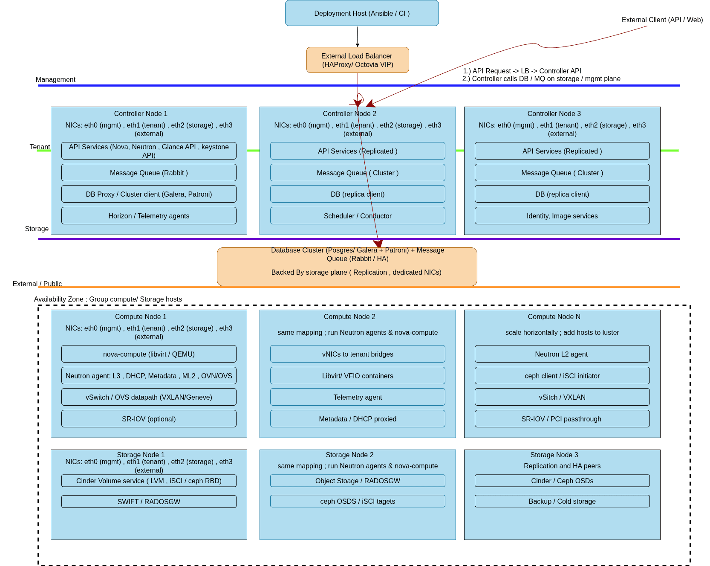

OpenStack Deployment Technology Decision¶
Introduction and Purpose¶
This document provides the technical rationale for selecting OpenStack Ansible as our OpenStack deployment and lifecycle management solution. The evaluation compares three primary deployment approaches: Charmed OpenStack (MAAS + Juju), Kolla-Ansible, and OpenStack Ansible.
Scope¶
This decision covers the deployment, configuration management, and operational lifecycle of OpenStack infrastructure services. The scope includes initial deployment, day-2 operations, upgrades, scaling, and troubleshooting workflows.
Target Scale: This evaluation assumes a multi-node deployment with 3 controller nodes, 3-20 compute nodes, and 3 storage nodes, supporting 100-500 virtual machines in production.
Deployment Mode: OpenStack Ansible supports flexible deployment modes
configurable via inventory settings. Services can be deployed in LXC
containers (default) or directly on metal using the is_metal: true
property. This document assumes the default LXC container mode unless
otherwise specified. See OpenStack Ansible Configuration Reference
for deployment options.
Architecture Comparison Overview¶
The following diagram illustrates the abstraction layers and deployment approaches for each technology:
graph TB
subgraph "Charmed OpenStack"
JC[Juju Controller]
MAAS[MAAS Server]
CH1[Charm: Nova]
CH2[Charm: Neutron]
CH3[Charm: Keystone]
JC --> CH1
JC --> CH2
JC --> CH3
MAAS --> JC
end
subgraph "Kolla-Ansible"
AP1[Ansible Playbooks]
DC1[Docker: Nova]
DC2[Docker: Neutron]
DC3[Docker: Keystone]
DR[Docker Runtime]
AP1 --> DR
DR --> DC1
DR --> DC2
DR --> DC3
end
subgraph "OpenStack Ansible"
AP2[Ansible Playbooks]
LXC1[LXC: Nova]
LXC2[LXC: Neutron]
LXC3[LXC: Keystone]
OS[Operating System]
AP2 --> OS
OS --> LXC1
OS --> LXC2
OS --> LXC3
endDeployment Architecture¶

Architecture Overview¶
The deployment architecture implements a multi-tier OpenStack cloud with clear separation of control plane, data plane, and storage services across dedicated network planes. This design ensures optimal performance, security isolation, and operational maintainability.
Control Plane Components¶
Controller Nodes (3x HA Cluster):
- Host all OpenStack API services (Nova, Neutron, Cinder, Glance, Keystone, Horizon)
- Run clustered database services (MariaDB Galera cluster)
- Operate message queue services (RabbitMQ cluster)
- Provide load balancing and API endpoint management
- Handle authentication, authorization, and service orchestration
Load Balancer:
- Distributes external API traffic across controller nodes
- Provides SSL termination and health checking
- Ensures high availability for all OpenStack APIs
- Routes dashboard (Horizon) traffic to active controllers
Data Plane Components¶
Compute Nodes (3-20x):
- Run Nova compute service for VM lifecycle management
- Host Neutron L2/L3 agents for tenant networking
- Execute hypervisor operations (KVM/QEMU)
- Provide local storage for ephemeral disks
- Connect to all network planes for VM traffic isolation
Network Nodes (Optional/Integrated):
- Handle Neutron L3 routing and NAT services
- Provide DHCP services for tenant networks
- Manage floating IP assignment and external connectivity
- Can be integrated into controller or compute nodes
Storage Plane Components¶
Storage Nodes (3x):
- Provide Cinder block storage services
- Host Swift object storage services
- Manage persistent volume attachments to VMs
- Implement storage replication and backup services
Network Plane Architecture¶
Management Network:
- Carries OpenStack API traffic between services
- Handles Ansible deployment and configuration management
- Provides SSH access and monitoring traffic
- Isolated from tenant and external networks
Tenant Network (Overlay):
- Carries east-west VM-to-VM traffic within projects
- Implements VXLAN/GRE tunneling for network isolation
- Provides L2/L3 services through Neutron agents
- Scales to support thousands of tenant networks
Storage Network:
- Dedicated to Cinder and Swift storage traffic
- Carries iSCSI, NFS, or Ceph storage protocols
- Optimized for high throughput and low latency
- Isolated from other traffic types for performance
External Network:
- Provides north-south connectivity to internet/WAN
- Handles floating IP traffic and external API access
- Routes traffic through provider networks
- Connects to organizational network infrastructure
Traffic Flow Patterns¶
API Request Flow:
- External client → Load balancer → Controller node APIs
- API service → Database cluster (MariaDB Galera)
- API service → Message queue (RabbitMQ) → Target service
- Response flows back through same path with load balancer distribution
VM East-West Traffic:
- VM → Compute node Neutron agent → Tenant network overlay
- VXLAN/GRE encapsulation across compute nodes
- Neutron L2/L3 agents handle routing and switching
- Traffic remains on tenant network plane throughout
Storage I/O Flow:
- VM → Compute node → Storage network plane
- Cinder volume attachment via iSCSI/NFS protocols
- Storage nodes handle replication and backup
- Swift object access through dedicated storage APIs
High Availability and Redundancy¶
Controller HA:
- Active-active clustering for all API services
- MariaDB Galera 3-node cluster with automatic failover
- RabbitMQ cluster with message replication
- Load balancer health checks and automatic node removal
Network Redundancy:
- Multiple network paths for each plane
- Neutron agent failover for L3 services
- VRRP for gateway redundancy
- Bond interfaces for physical network resilience
Storage Resilience:
- Cinder volume replication across storage nodes
- Swift multi-replica object storage
- Backup and snapshot capabilities
- Cross-AZ storage distribution
Document Maintenance Note¶
Architecture Updates: When the deployment architecture changes (new node types, additional network planes, scale modifications, or service relocations), update both this diagram and the corresponding explanation sections. Version the diagram files and reference the commit hash in deployment documentation.
Deployment Mode Changes: If the deployment mode changes from the default LXC containers to bare-metal deployment (or vice versa), update both the diagram annotations and all explanatory text sections to reflect the new service deployment method. Update troubleshooting procedures and operational workflows accordingly.
Review Schedule: Review architecture documentation quarterly and after major OpenStack releases to ensure accuracy and alignment with operational reality.
Candidate Technology Overviews¶
Charmed OpenStack (MAAS + Juju)¶
Canonical's Charmed OpenStack combines Metal-as-a-Service (MAAS) for bare metal provisioning with Juju for application modeling and orchestration. This approach uses charms (application packages) to deploy and manage OpenStack services.
Architecture: Model-driven deployment using Juju controllers, charms for service definitions, and MAAS for hardware lifecycle management. Services are deployed as applications with defined relationships and configurations.
Kolla-Ansible¶
Kolla-Ansible deploys OpenStack services using Docker containers orchestrated through Ansible playbooks. It provides containerized OpenStack services with standardized deployment patterns.
Architecture: Container-based deployment where each OpenStack service runs in Docker containers. Ansible manages container orchestration, configuration, and lifecycle operations.
OpenStack Ansible¶
OpenStack Ansible deploys OpenStack services using Ansible playbooks and
roles with configurable deployment modes. Services can be deployed in LXC
containers (default) or directly on metal hosts using the is_metal: true
inventory property.
Architecture: Flexible deployment supporting both LXC containers and
bare-metal installation. In container mode (default), services run within
LXC containers managed by systemd. In metal mode (is_metal: true),
services run directly on the host using systemd. Configuration is managed
through comprehensive Ansible roles and inventory settings. See
OpenStack Ansible Deployment Guide
and Inventory Configuration Reference
for deployment options.
Evaluation Criteria¶
The following criteria guided our technology selection:
- Operational Transparency: Visibility into service configuration, troubleshooting capabilities, and debugging workflows
- Customization Flexibility: Ability to modify configurations, integrate custom components, and adapt to specific requirements
- Team Skill Alignment: Match with existing team expertise in configuration management and infrastructure automation
- Upgrade Path Complexity: Simplicity and reliability of version upgrades and maintenance operations
- Resource Overhead: System resource consumption and performance impact
- Community Support: Documentation quality, community activity, and long-term viability
- Integration Capabilities: Compatibility with existing infrastructure automation and monitoring systems
- Troubleshooting Complexity: Ease of diagnosing and resolving operational issues
Technology Comparison Matrix¶
| Criteria | Charmed | Kolla | OpenStack Ansible |
|---|---|---|---|
| Transparency | Medium | Low | High |
| Customization | Low | Medium | High |
| Team Skills | Low | Medium | High |
| Upgrades | Medium | High | Medium |
| Resources | Medium | High | Low-Medium |
| Community | Medium | Medium | High |
| Integration | Low | Medium | High |
| Troubleshooting | High | High | Low |
Table Legend:
- Charmed: Charmed OpenStack (MAAS + Juju)
- Kolla: Kolla-Ansible (Docker containers)
- Transparency: Operational visibility and debugging access
- Customization: Configuration flexibility and adaptation capability
- Team Skills: Alignment with existing team expertise
- Upgrades: Complexity of version upgrades and maintenance
- Resources: System resource consumption and overhead
- Community: Documentation quality and community support
- Integration: Compatibility with existing infrastructure
- Troubleshooting: Complexity rating (High = more complex)
Selected Approach and Rationale¶
OpenStack Ansible is selected as our deployment technology.
Primary Rationale¶
Operational Transparency: OpenStack Ansible provides direct access to service configurations, logs, and system state through lightweight LXC containers. Services remain easily accessible via standard Linux tools (systemctl, journalctl, ps) while maintaining isolation. This transparency is critical for troubleshooting complex distributed systems and understanding service behavior during incidents.
Team Skill Leverage: Our team has extensive Ansible expertise from existing infrastructure automation. OpenStack Ansible builds on this foundation rather than requiring new toolchain adoption (Juju/charms or Docker orchestration patterns).
Customization Requirements: Our environment requires specific network configurations, security hardening, and integration with existing monitoring systems. OpenStack Ansible's role-based architecture allows granular customization without fighting framework constraints.
Debugging Simplicity: When issues occur, OpenStack Ansible allows
direct investigation of service configurations, LXC containers, and
application logs without navigating complex container abstractions or Juju
model complexities. Services can be accessed directly via lxc-attach or
standard systemd commands.
Specific Advantages Over Alternatives¶
vs Charmed OpenStack:
- Eliminates Juju learning curve and operational complexity
- Removes dependency on MAAS for environments with existing provisioning
- Provides direct configuration control without charm limitations
- Simplifies troubleshooting by removing model abstraction layers
vs Kolla-Ansible:
- Reduces resource overhead compared to Docker containers (LXC estimated ~2-5% memory per service vs Docker's estimated ~15-20% per node, to be validated in environment)
- Simplifies networking by avoiding Docker bridge networking complexity (LXC uses host networking with namespace isolation)
- Enables direct service debugging through lightweight containers (access
via
lxc-attachor host-level systemctl commands) - Provides clearer upgrade paths without container image coordination (no image registry dependencies or Docker version conflicts)
Risks, Trade-offs, and Mitigations¶
Identified Risks¶
Configuration Complexity: OpenStack Ansible requires more detailed configuration management compared to higher-level abstractions, with ~200+ configuration parameters across core services.
- Mitigation: Invest in comprehensive configuration templates, automated validation (ansible-lint, yaml validation), and configuration drift detection
Service Dependency Management: Manual coordination of service dependencies during deployments and upgrades, requiring explicit ordering of 15+ interconnected services.
- Mitigation: Implement thorough testing procedures, staged deployment processes with health checks, and automated rollback triggers
Security Hardening Responsibility: Direct responsibility for service security configuration rather than framework defaults, including TLS certificates, firewall rules, and service authentication.
- Mitigation: Develop security baseline configurations, automated compliance checking (OpenSCAP, custom Ansible security roles), and regular security audits
Operational Learning Curve: Team requires deep understanding of OpenStack service internals and interdependencies.
- Mitigation: Invest in comprehensive training, detailed runbook development, and mentorship from OpenStack subject matter experts
Accepted Trade-offs¶
Higher Initial Configuration Effort: More upfront investment in playbook customization and testing compared to turnkey solutions.
Manual Dependency Coordination: Requires explicit service dependency management rather than framework automation.
Security Configuration Ownership: Full responsibility for security hardening rather than framework-provided defaults.
Operational Implications¶
Day-1 Operations¶
- Environment-specific configuration development using OpenStack Ansible's provided playbooks, roles, and helper scripts (estimated 2-4 weeks for customization)
- CI/CD pipeline integration leveraging OpenStack Ansible's
bootstrap-ansible.shandrun-playbooks.shautomation - Custom variable files and inventory configuration for organizational requirements
- Security baseline implementation and validation (CIS benchmarks, organizational security policies)
- Network topology validation and service endpoint testing
- Performance baseline establishment and capacity planning
Day-2 Operations¶
- Direct service management: LXC container mode uses
lxc-attachand systemctl within containers; metal mode uses direct systemctl on host - Log aggregation and monitoring integration with minimal container complexity (direct syslog integration, native metric collection)
- Configuration drift detection and remediation through Ansible (scheduled compliance runs, automated remediation)
- Capacity monitoring and scaling operations (horizontal compute scaling, storage expansion)
- Backup and disaster recovery procedures (database backups, configuration snapshots)
Upgrade Operations¶
- Ansible playbook-driven upgrade processes with automated pre-flight checks
- Service-by-service upgrade coordination and validation (rolling upgrades with health checks)
- Rollback procedures using configuration management state (automated rollback triggers, configuration versioning)
- Database migration coordination and validation
- Post-upgrade testing and validation procedures
Troubleshooting Workflows¶
- Direct access to service logs and configurations: LXC mode via
lxc-attachand container logs; metal mode via direct host access - Native debugging tools and processes (strace, tcpdump, service-specific debugging)
- Clear service dependency and communication patterns (host networking with namespace isolation in LXC mode)
- Performance profiling and bottleneck identification
- Root cause analysis procedures with direct system access
Validation and Acceptance Criteria¶
Technical Validation¶
- [ ] Successful deployment of core OpenStack services across controller nodes with all services reporting healthy status
- [ ] Controller HA cluster operational: MariaDB Galera 3-node cluster, RabbitMQ cluster, load balancer health checks
- [ ] VM boot time < 60 seconds for standard instances (target to be validated in environment)
- [ ] API response times < 2 seconds for standard operations through load balancer (target to be validated)
- [ ] Network plane isolation verified: management, tenant, storage, and external networks properly segregated
- [ ] East-west VM traffic flows correctly through tenant network overlay (VXLAN/GRE) with < 1ms latency (target)
- [ ] North-south traffic routing functional through external network and floating IPs
- [ ] Storage I/O flows on dedicated storage network: Cinder IOPS > 1000 (target), Swift throughput > 100MB/s (target)
- [ ] Integration with existing monitoring and logging infrastructure (Prometheus/Grafana, ELK stack)
- [ ] Security baseline implementation achieving 95% compliance with organizational security policies
Operational Validation¶
- [ ] Team proficiency demonstrated: 100% of team members can execute standard deployment procedures independently
- [ ] Documented runbooks covering 15+ common operational scenarios (service restart, node replacement, capacity expansion)
- [ ] Successful execution of upgrade procedures in test environment with < 5 minutes downtime per service
- [ ] Integration with existing change management: automated deployment pipeline with approval gates
- [ ] Incident response time: P1 incidents acknowledged within 15 minutes, initial response within 30 minutes
- [ ] Configuration drift detection: automated scanning every 4 hours, remediation within 1 hour
Performance Validation¶
- [ ] Controller node CPU utilization < 70% during normal operations (target baseline)
- [ ] Controller node memory utilization < 80% during normal operations (target baseline)
- [ ] Compute node overhead < 10% of total resources including LXC containers (target to be measured)
- [ ] Database response times < 100ms for 95th percentile queries (target to be validated)
- [ ] Message queue latency < 50ms for 95th percentile operations (target to be validated)
- [ ] Successful horizontal scaling: add compute node with < 10 minutes integration time (target)
- [ ] Network performance: tenant network throughput > 80% of physical network capacity (target)
Long-term Validation¶
- [ ] Successful completion of first major version upgrade (OpenStack release) with < 30 minutes total downtime
- [ ] Effective incident response: 90% of incidents resolved using documented procedures and direct system access
- [ ] Team satisfaction survey: > 80% satisfaction with operational workflows and debugging capabilities
- [ ] Capacity planning accuracy: actual resource consumption within 15% of projections
- [ ] Security compliance: pass quarterly security audits with zero critical findings
Failure Mode Testing¶
- [ ] Controller node failure: automatic failover within 2 minutes, load balancer removes failed node
- [ ] Database cluster failure: MariaDB Galera automatic failover within 60 seconds, zero data loss
- [ ] Message queue failure: RabbitMQ cluster maintains service continuity
- [ ] Compute node failure: VM evacuation and restart within 5 minutes
- [ ] Network plane failure: traffic isolation maintained, no cross-plane contamination
- [ ] Storage node failure: Cinder/Swift replication maintains data availability, performance degradation < 20%
- [ ] Network partition: services continue operating in degraded mode, automatic recovery upon reconnection
- [ ] Load balancer failure: API services remain accessible through backup load balancer